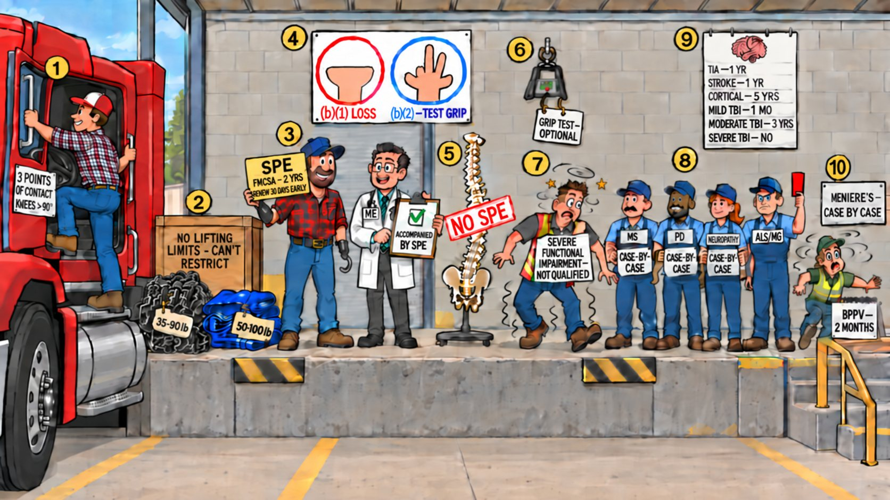

Card 8 of 13 · 49 CFR 391.41(b)(1), (b)(2), (b)(7) · 391.49
The Loading Dock
Limbs and neuromuscular — job demands, SPE certificates, grip and prehension, neurologic waiting periods, vertigo.

0:00 / 0:00
Press play — the narrator walks the scene and the spotlight follows to each numbered object. Click any paragraph to jump there. Space play/pause · ←/→ previous/next object · [/] previous/next card.
What this card covers
Limbs and neuromuscular — job demands, SPE certificates, grip and prehension, neurologic waiting periods, vertigo. Standard: 49 CFR 391.41(b)(1), (b)(2), (b)(7) · 391.49.
The hooks to keep
- Knees past 90° and a wheel that takes both hands
- No lifting restrictions — you can't restrict
- SPE from FMCSA, two years, renew 30 days early
- Five fingers is loss; fewer is grip
- No SPE for the spine
- TIA one, cortical stroke five, moderate TBI three
Test yourself
10 questions on this card
Answer each question to see the explanation, its sources, and the cheat-sheet entry.